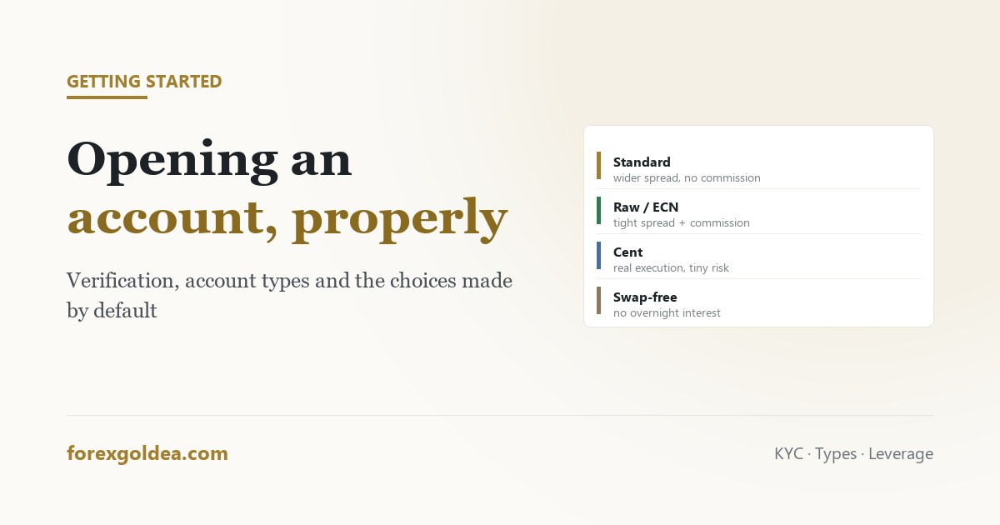

Opening a trading account, step by step

Opening a trading account takes about ten minutes, and almost none of that time is spent on the decisions that matter. The form asks for your details; it does not ask whether you have picked the right account type, sensible leverage, or an amount you can genuinely afford to lose. Those choices get made by default if you do not make them deliberately.
In short the process is: register with your details, verify identity (passport or national ID plus a proof of address), choose an account type, fund it, then download MetaTrader and log in with the credentials emailed to you. Verification usually takes hours to a couple of days. The decisions worth thinking about beforehand are the account type (standard, raw-spread or cent), the leverage you request, and the amount. Open a demo first — it takes two minutes and needs no verification at all.
Start with a demo, because it costs nothing
Before any of the paperwork, open a demo account. It requires no verification, no deposit and no commitment, and it gives you the same platform with the same instruments at live prices.
What it is genuinely good for: learning where things are, seeing how gold actually moves in dollars per hour, and finding out whether your intended approach produces any trades at all. What it is poor at: teaching you how you behave when the money is real, which is the part that decides most outcomes. That gap is covered in knowing when demo is finished.
Registration and verification
The form itself is short — name, email, country, phone. Verification is the part that takes time, and regulated brokers all require it.
You will be asked for two things:
- Proof of identity — passport, national ID card or driving licence, photographed clearly with all four corners visible.
- Proof of address — a utility bill or bank statement, usually issued within the last three to six months, showing your name and address.
Most rejections are for boring reasons: a cropped corner, a document too old, a name that does not match exactly, or a screenshot of a banking app rather than a statement. Getting these right first time turns a two-day wait into a two-hour one.
There is often a short questionnaire about trading experience. Answer it honestly — in some jurisdictions the answers determine what leverage you are allowed, and inflating your experience to unlock higher leverage is unlocking a larger loss.
Account types, and what actually differs
The names vary by broker, but the structures do not.
| Type | How you pay | Suits |
|---|---|---|
| Standard | Wider spread, usually no commission | Most people. Simple, and fine for anything that is not high-frequency. |
| Raw / ECN | Tight spread plus a per-lot commission | Frequent traders, where the total cost works out lower. |
| Cent | Same as standard, but balance and lots in cents | Testing with real execution and very small money. |
| Swap-free | No overnight interest, sometimes an admin fee instead | Traders who need it for religious reasons — see the swap-free explanation. |
The standard-versus-raw question is arithmetic, not preference. Work out your likely monthly volume and compare spread cost against spread-plus-commission. For most people trading a few times a week on gold, the difference is small enough not to agonise over — the mechanics are in what the spread really costs.
The cent account deserves more attention than it gets. Balances are denominated in cents, so $50 behaves like 5,000 cent units. Execution is completely real — live spreads, live slippage — but a full losing streak costs the price of lunch. It is the most honest cheap test available.
Leverage: request less than they offer
You will be asked to choose leverage, often with options up to 1:500 or beyond, and the highest number is presented as the most attractive.
Leverage does not change what a trade wins or loses. A one-ounce gold position with a $6 stop loses $6 at any leverage setting. What it changes is how much margin is held — and, crucially, how large a position the account will let you open. High leverage removes the brake that would otherwise stop a small account taking an oversized position.
For most people starting out, 1:100 is ample for gold and quietly prevents a category of mistake. The full argument is in leverage on gold and what margin actually ties up.
Funding, and the number that matters
Deposit methods vary — card, bank transfer, e-wallets, sometimes crypto. Two practical points:
- Withdrawals usually return to the funding source. Deposit by card and the money comes back to that card. This is an anti-money-laundering requirement, not an obstruction, but it is worth knowing before you deposit from an account you are about to close.
- Check the withdrawal process before you need it. Fees, minimums and processing times are easier to read calmly at the start than urgently later.
On the amount: whatever you deposit should be money you could lose in full without anything important changing. That is not boilerplate — accounts funded with money that matters get closed early, not because the strategy failed but because sitting through an ordinary drawdown becomes unbearable. The arithmetic on realistic figures is in how much a gold account actually needs.
Logging in, and the one thing people get wrong
After funding, the broker emails three things: a login number, a password, and a server name. Download MetaTrader from your broker rather than a generic source, then File → Login to Trade Account.
If it rejects you, the cause is almost always the server rather than the password — brokers run several servers with similar names and the right one is in that email. A green connection indicator at the bottom right means you are in.
Then, before placing anything: check the gold symbol's specification in Market Watch. Contract size and minimum lot vary between brokers, and knowing yours is what makes position sizing correct rather than approximate.
Reader questions
What documents do I need to open a trading account?
Photo ID (passport, national ID or licence) and a recent utility bill or bank statement showing your name and address.
How long does account verification take?
Typically hours to two working days. Delays are usually document problems: cropped corners, old dates, or name mismatches.
What is the difference between a standard and a raw spread account?
Standard has a wider spread and no commission; raw has a tight spread plus commission. Which is cheaper depends on your volume.
Should I choose the highest leverage offered?
No. It does not change your loss per trade, only how oversized a position you are allowed. 1:100 is ample for gold.
What is a cent account and should I use one?
Balance and lots are in cents, so $50 acts like 5,000 units. Real execution, tiny risk — ideal for honest testing.
Can I withdraw to a different account than I deposited from?
Usually not — brokers return funds to the original source for anti-money-laundering reasons. Check the policy first.
Where this leaves you
The form takes ten minutes and the decisions inside it outlast that by a long way. Pick the account type from arithmetic rather than marketing, request less leverage than you are offered, deposit only what you could lose without it mattering, and spend a week on demo first. Do that and the account starts from a sensible place — which is worth more than any setting you change afterwards.
Affiliate disclosure: we earn a commission when you open and fund an account through our partner links, at no extra cost to you.